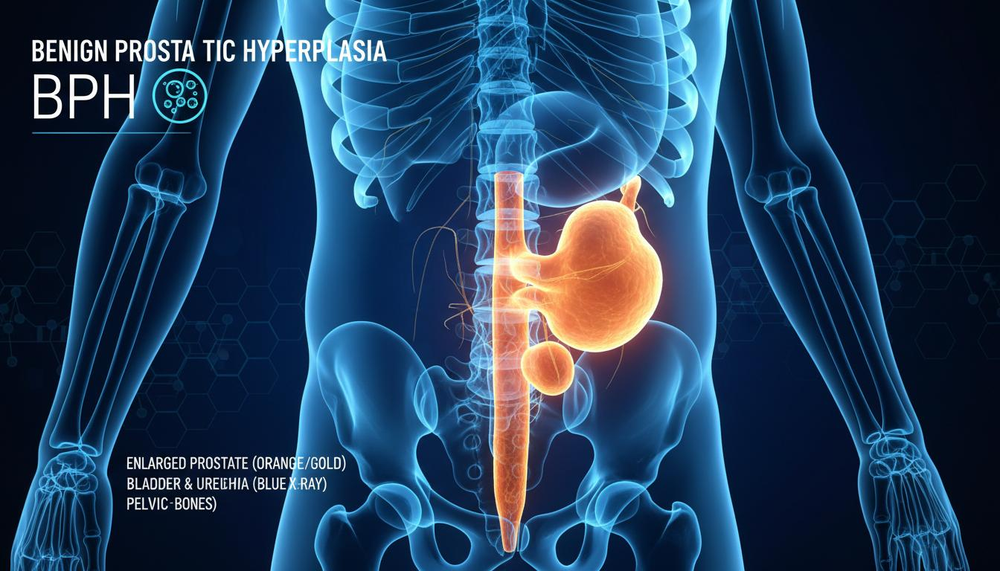
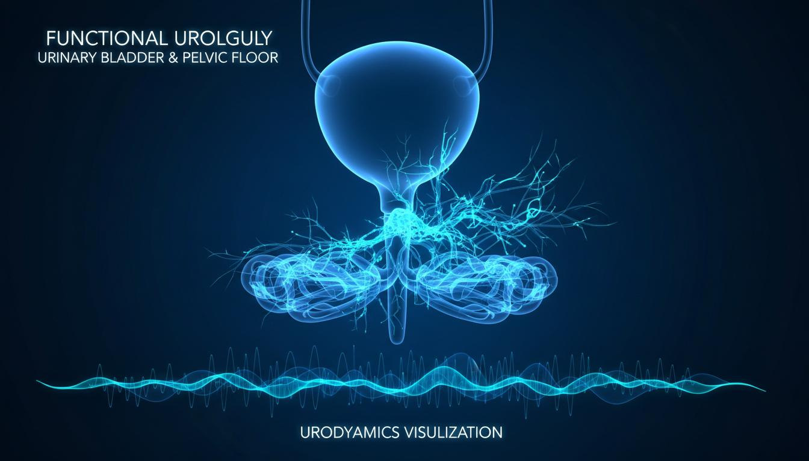

Полный спектр высокотехнологичной урологической помощи с применением передовых малоинвазивных технологий

Комплексное лечение аденомы предстательной железы любых размеров с применением передовых малоинвазивных технологий
УЗИ, КТ, МРТ, уродинамическое исследование, определение объема простаты
Золотой стандарт лечения ДГПЖ при больших размерах простаты. Минимальная кровопотеря, быстрое восстановление
Удаление аденомы через лапароскопический доступ при очень больших размерах простаты (свыше 120 см³)
Классический метод при малых и средних размерах простаты (до 60-80 см³). Золотой стандарт малоинвазивного лечения
Энуклеация аденомы при больших размерах свыше 100 см³. Полное удаление аденоматозной ткани

Современные методы диагностики и лечения мочекаменной болезни любой сложности
Неконтактное дробление камней почек и мочеточников с помощью ударно-волнового литотриптора
Медикаментозная терапия, метафилактика, дисметаболическая терапия, коррекция pH мочи
Эндоскопическое дробление камней мочеточника и почки с помощью лазерного или пневматического литотриптора
Удаление крупных камней мочеточника лапароскопическим доступом при неэффективности эндоскопических методов
Удаление крупных камней почки через прокол в поясничной области. Золотой стандарт при коралловидных камнях
Перкутанные операции на почке при крупных камнях и сложных аномалиях

Комплексное лечение злокачественных новообразований органов мочевой системы с применением малоинвазивных технологий
ТУР опухоли мочевого пузыря, внутрипузырная химиотерапия, цистэктомия с созданием замещающего резервуара
Лапароскопическая радикальная нефрэктомия, паренхимосохраняющие операции, робот-ассистированная хирургия
Радикальная простатэктомия (открытая, лапароскопическая, робот-ассистированная), брахитерапия, активное наблюдение

Восстановительные операции на мочевыводящих путях, лечение стриктур, недержания, врожденных аномалий
Устранение стриктуры верхнего отдела мочеточника с восстановлением проходимости
Замена длинного дефекта мочеточника сегментом тонкой кишки при облитерации
Комплексная диагностика и лечение всех форм недержания мочи, включая постоперационное
Фиксация почки при нефроптозе (опущении почки) лапароскопическим доступом
Установка синтетического слинга при стрессовом недержании мочи у мужчин и женщин
Эндоскопическая и открытая пластика стриктур уретры любой локализации и сложности
Имплантация надувного или полужесткого фаллопротеза при тяжелой эректильной дисфункции
Восстановление проходимости мочеточника при облитерации эндоскопическими методами

Лечение заболеваний, влияющих на мужское репродуктивное здоровье и качество половой жизни
Лечение варикоцеле лапароскопическим методом — минимальная травматичность, высокая эффективность
Микрохирургическая операция при варикоцеле с сохранением артерии и лимфатических сосудов
Комплексное лечение: консервативная терапия, БОС-тренинг

Диагностика и лечение функциональных нарушений мочевыделительной системы, нейрогенных расстройств
Введение ботулотоксина при нейрогенном мочевом пузыре, гиперактивном мочевом пузыре, недержании мочи
Комплексный подход к диагностике и лечению всех форм нарушений мочеиспускания
Специализированная диагностика и многофакторное лечение интерстициального цистита / синдрома болезненного мочевого пузыря
Золотой стандарт диагностики функциональных нарушений нижних мочевых путей
Комплексная терапия хронической тазовой боли у мужчин и женщин
Диагностика причин рецидивов и индивидуальная схема лечения
Обучение управлению функциями тазового дна с помощью биологической обратной связи
Комплексная реабилитация с применением современных физиотерапевтических методов
Робот-ассистированная хирургия открывает новые возможности в лечении сложных урологических заболеваний
Точное удаление лимфатических узлов при онкологических заболеваниях
Удаление опухоли почки с сохранением здоровой ткани и функции органа
Точное восстановление мочеточника при стриктурах и повреждениях
Точное удаление предстательной железы при раке с сохранением нервов и сфинктеров
Удаление мочевого пузыря при раке с созданием неоцисты или уретероилеокутанеостомы
Современная программа трансплантации почки: подготовка, операция и посттрансплантационный мониторинг
Полное обследование, иммунологическая типизация, консультации специалистов
Малоинвазивное извлечение почки от живого донора с минимальной травматичностью
Длительное наблюдение, контроль функции трансплантата, коррекция иммуносупрессивной терапии
Пересадка почки от живого или посмертного донора. Собственный протокол иммуносупрессии
Минимально инвазивная терапия водяным паром при ДГПЖ — амбулаторная процедура
Инъекция водяного пара в простату разрушает избыточную ткань аденомы. Процедура 10-15 минут, без госпитализации, сохраняет эректильную функцию. Выполняется в амбулаторных условиях под местной анестезией.

Обучение специалистов передовым методам эндоскопической и лапароскопической урологии
Практические курсы для практикующих урологов по эндоскопическим и лапароскопическим методам лечения
Подготовка к сертификационным экзаменам, курсы непрерывного медицинского образования
Программы стажировки для врачей-урологов, ординаторов и интернов
Организация выездных образовательных мероприятий и семинаров для специалистов из других регионов
Консультацию можно получить в рабочий день с 10 до 16 часов по предварительной записи.
+7 (812) 57-611-57Видеоконсультация с главным врачом по предварительной записи.
Вт и чт с 14:00 до 16:00. Запись по телефону.
Круглосуточно +7 (812) 57-611-57.